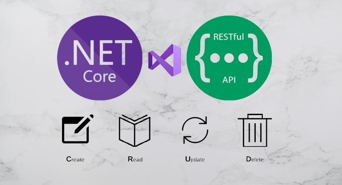

Md. Golam Shahriar
Senior Software Engineer (.NET)
Backend Developer
● Software engineer with more than Seven (7+) years of software development experience in using different .NET technologies like ASP.NET Core, MVC, Web API, Web Forms, Desktop Forms using language C# & VB, ORM likes Entity Framework & Dapper and architecture likes Microservice and Monolithic (n-tier and onion)
● Experience in analyze, design and develop any types of high-level transnational enterprise solutions like ERP. Has the ability to understand and transform complex business requirements into software ensuring applications are delivered on time, performance optimized and maintainable with team.
● Have experience on database programming for writing complex query using function, view & stored-procedure.
● A motivated self-learner & also an effective team player.
HIRE
ME

SKILLS & TECHNOLOGIES
● Analytical, Self-learning & Team leading Skills
● ORM (Entity Framework, Dapper)
● JavaScript Libraries (JQuery, AngularJs)
● Frontend Skills (HTML, Bootstrap)
● Source Control (GitHub/GitLab/Git/SVN/Bitbucket)
● DBMS (MS SQL, MySQL, PostgreSQL)
● API Testing (Postman, Swagger)
● Agile - Scrum Practices
● Documentation (MS Visio)
● Project Management Tools (JIRA, Trello, Freshworks, Redmine)
DOWNLOAD RESUME